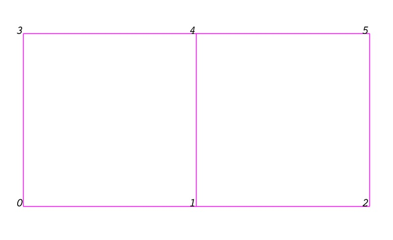
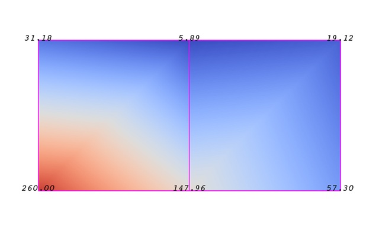
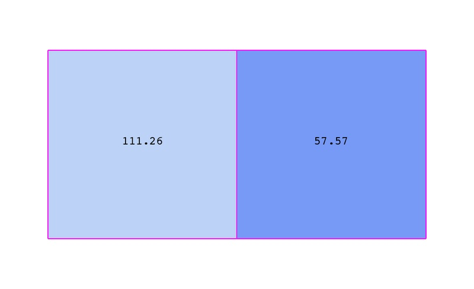
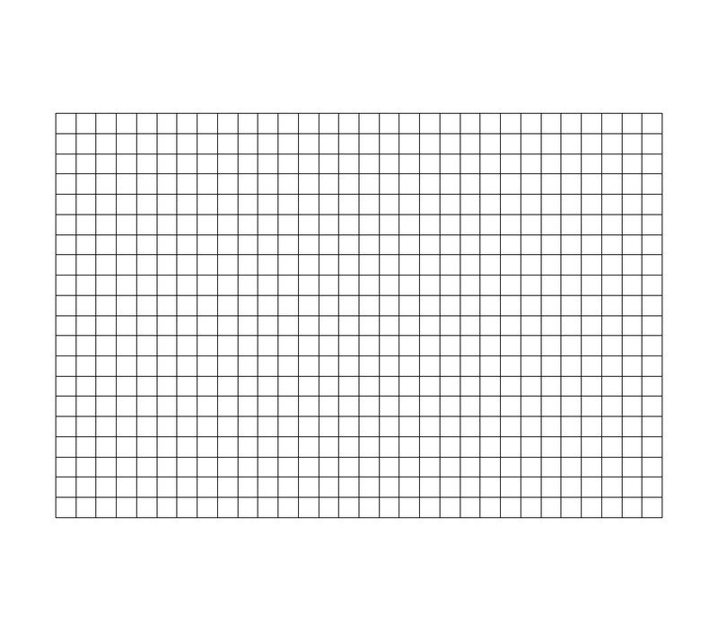
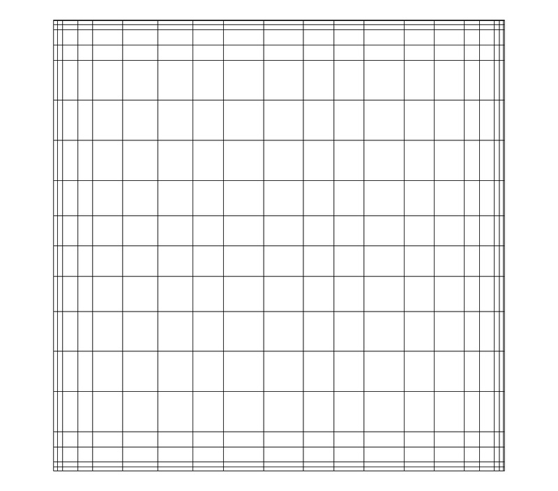
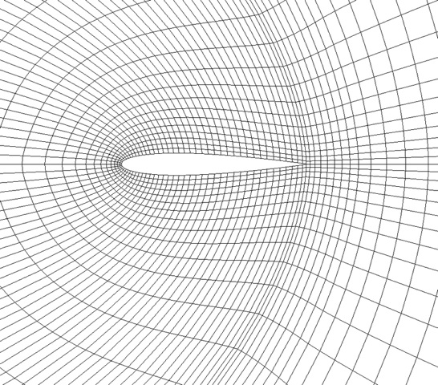
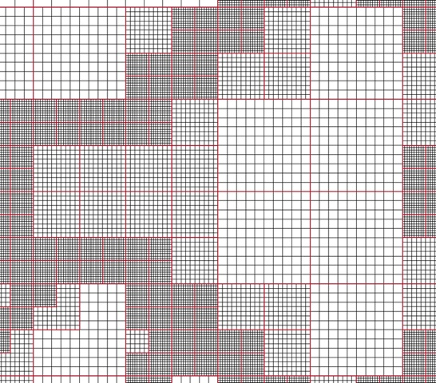
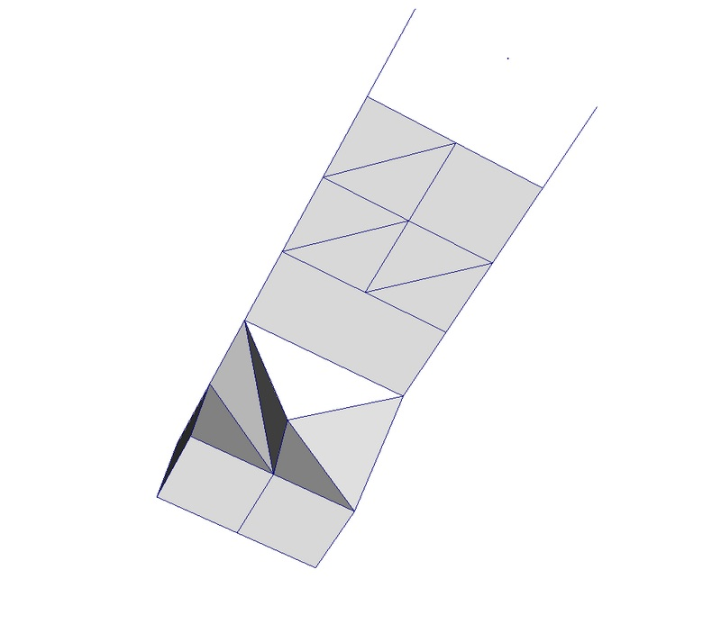
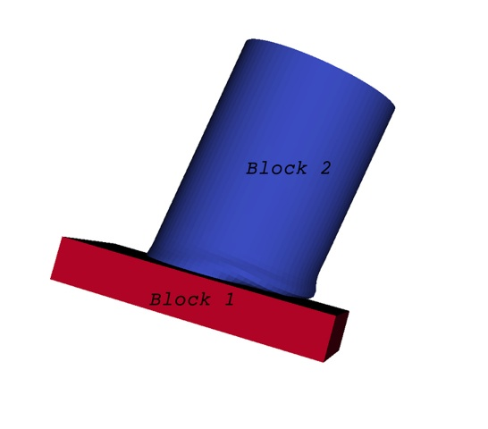
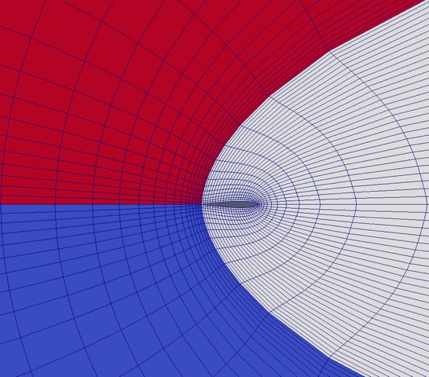

VTK Data Model
Introduction
To use ParaView effectively, you need to understand the ParaView data model. Here, we will introduce the the VTK data model used by ParaView briefly. For more details, you can refer to one of the VTK books.
The most fundamental data structure in VTK is a data object. Data objects can either be scientific datasets such rectilinear grids or finite elements meshes (see below) or more abstract data structures such as graphs or trees. Since ParaView is geared toward scientific visualization, we will focus on the former and touch briefly on the latter when necessary.
Datasets are formed of smaller building blocks: mesh (topology and geometry) and attributes.
Mesh
Even though the actual data structure used to store the mesh in memory depends on the type of the dataset, some abstractions are common to all types. We describe these here and we briefly describe the data structures below for each dataset. In general, a mesh consists of vertices (points) and cells (elements, zones). Cells are used to discretize a region and can have various types such a tetrahedra, hexahedra etc. Each cell contains a set of vertices. The mapping from cells to vertices is called the connectivity. Note that even though it is possible to define data elements such as faces and edges, VTK does not represent these explicitly. Rather, they are implied by a cell's type and its connectivity. One exception to this rule is the arbitrary polyhedron which explicitly stores its faces. Here is an example mesh that consists of 2 cells. The first cell is defined by vertices (0, 1, 3, 4) and the second cell is defined by vertices (1, 2, 4, 5). These cells are neighbors because they share the edge defined by the points (1, 4).
So far, we talked about the topology only. A mesh is fully defined by its topology and the spatial coordinates of its vertices. In VTK, the point coordinates may be implicit or explicitly defined by a data array of dimensions (number_of_points, 3).
Attributes (fields, arrays)
An attribute (aka data array or field) defines the discrete values of a field over the mesh. Examples of attributes include Pressure, Temperature, Velocity and Stress Tensor. Note that VTK does not specifically define different types of attributes. All attributes are stored as data arrays which can have an arbitrary number of components. ParaView makes some assumptions in regards to the number of components. For example, a 3 component array is assumed to be an array of vectors. Attributes can be associated with points or cells. It is also possible to have attributes that are not associated with either. The following example demonstrates the use of a point-centered attribute. Note that the attribute is only defined on the vertices. Interpolation is used to obtain the values everywhere else. The interpolation functions used depends on the cell type. See VTK documentation for details.
The figure below demonstrates the use of a cell-centered attribute. Note that cell-centered attributes are assumed to be constant over each cell. Due to this property, many filters in VTK cannot be directly applied to cell-centered attributes. It is normally required to apply a Cell Data to Point Data filter. In ParaView, this filter is applied automatically when necessary.

Uniform Rectilinear Grid (Image Data)
A uniform rectilinear grid (aka image data) defines its topology and point coordinates implicitly. To fully define the mesh for an image data, VTK uses the following:
Extents - these define the minimum and maximum indices in each direction. For example, an image data of extents (0, 9), (0, 19), (0, 29) has 10 points in the x-direction, 20 points in the y-direction and 30 points in the x-direction. The total number of points is 10*20*30.
Origin - this is the position of a point defined with indices (0, 0, 0)
Spacing - this is the distance between each point. Spacing for each direction can defined independently
The coordinate of each point is defined as follows: coordinate = origin + index*spacing where coordinate, origin, index and spacing are vectors of length 3.
Note that the generic VTK interface for all datasets uses a flat index. The (i,j,k) index can be converted to this flat index as follows: idx_flat = k*(npts_x*npts_y) + j*nptr_x + i.
A uniform rectilinear grid consists of cells of the same type. This type is determined by the dimensionality of the dataset (based on the extents) and can either be vertex (0D), line (1D), pixel (2D) or voxel (3D).
Due to its regular nature, an image data requires less storage than other datasets. Furthermore, many algorithms in VTK have been optimized to take advantage of this property and are more efficient for image data.
Rectilinear Grid
A rectilinear grid defines its topology implicitly and point coordinates semi-implicitly. To fully define the mesh for a rectilinear grid, VTK uses the following:
Extents - these define the minimum and maximum indices in each direction. For example, a rectilinear grid of extents (0, 9), (0, 19), (0, 29) has 10 points in the x-direction, 20 points in the y-direction and 30 points in the x-direction. The total number of points is 10*20*30.
3 arrays defining coordinates in the x-, y- and z-directions. These arrays are of length npts_x, npts_y and npts_z. This is a significant savings in memory as total memory used by these arrays is npts_x+npts_y+npts_z rather than npts_x*npts_y*npts_z.
The coordinate of each point is defined as follows: coordinate = (coordinate_array_x(i), coordinate_array_y(j), coordinate_array_z(k))".
Note that the generic VTK interface for all datasets uses a flat index. The (i,j,k) index can be converted to this flat index as follows: idx_flat = k*(npts_x*npts_y) + j*nptr_x + i.
A rectilinear grid consists of cells of the same type. This type is determined by the dimensionality of the dataset (based on the extents) and can either be vertex (0D), line (1D), pixel (2D) or voxel (3D).
Curvilinear Grid (Structured Grid)
A curvilinear grid defines its topology implicitly and point coordinates explicitly. To fully define the mesh for a curvilinear grid, VTK uses the following:
Extents - these define the minimum and maximum indices in each direction. For example, a curvilinear grid of extents (0, 9), (0, 19), (0, 29) has 10*20*30 points regularly defined over a curvilinear mesh.
An array of point coordinates. This arrays stores the position of each vertex explicitly.
The coordinate of each point is defined as follows: coordinate = coordinate_array(idx_flat)". The (i,j,k) index can be converted to this flat index as follows: idx_flat = k*(npts_x*npts_y) + j*nptr_x + i.
A curvilinear grid consists of cells of the same type. This type is determined by the dimensionality of the dataset (based on the extents) and can either be vertex (0D), line (1D), quad (2D) or hexahedron (3D).
AMR Dataset
VTK natively support Berger-Oliger type AMR (Adaptive Mesh Refinement) datasets. An AMR dataset is essentially a collection of uniform rectilinear grids grouped under increasing refinement ratios (decreasing spacing). VTK's AMR dataset does not force any constraint on if and how these grids should overlap. However, it provides support for masking (blanking) sub-regions of the rectilinear grids using an array of bytes. This allows VTK to process overlapping grids with minimal artifacts. VTK can automatically generate the masking arrays for Berger-Oliger compliant meshes.
Unstructured Grid
An unstructured grid is most general primitive dataset type. It stores topology and point coordinates explicitly. Even though VTK uses a memory-efficient data structure to store the topology, unstructured grid uses significantly more memory to represent its mesh. Therefore, use an unstructured grid only when you cannot represent your dataset as one of the above datasets. VTK supports a large number of cell types all of which can exist (heterogeneously) within one unstructured grid. The full list of all cell types supported by VTK can be found in the file vtkCellType.h in the VTK source code. Here is the list as of when this document was written:
VTK_EMPTY_CELL
VTK_VERTEX
VTK_POLY_VERTEX
VTK_LINE
VTK_POLY_LINE
VTK_TRIANGLE
VTK_TRIANGLE_STRIP
VTK_POLYGON
VTK_PIXEL
VTK_QUAD
VTK_TETRA
VTK_VOXEL
VTK_HEXAHEDRON
VTK_WEDGE
VTK_PYRAMID
VTK_PENTAGONAL_PRISM
VTK_HEXAGONAL_PRISM
VTK_QUADRATIC_EDGE
VTK_QUADRATIC_TRIANGLE
VTK_QUADRATIC_QUAD
VTK_QUADRATIC_TETRA
VTK_QUADRATIC_HEXAHEDRON
VTK_QUADRATIC_WEDGE
VTK_QUADRATIC_PYRAMID
VTK_BIQUADRATIC_QUAD
VTK_TRIQUADRATIC_HEXAHEDRON
VTK_QUADRATIC_LINEAR_QUAD
VTK_QUADRATIC_LINEAR_WEDGE
VTK_BIQUADRATIC_QUADRATIC_WEDGE
VTK_BIQUADRATIC_QUADRATIC_HEXAHEDRON
VTK_BIQUADRATIC_TRIANGLE
VTK_CUBIC_LINE
VTK_CONVEX_POINT_SET
VTK_POLYHEDRON
VTK_PARAMETRIC_CURVE
VTK_PARAMETRIC_SURFACE
VTK_PARAMETRIC_TRI_SURFACE
VTK_PARAMETRIC_QUAD_SURFACE
VTK_PARAMETRIC_TETRA_REGION
VTK_PARAMETRIC_HEX_REGION
Many of these cell types are straightforward. For details, see VTK documentation.
Polygonal Grid (Polydata)
 A
polydata is a specialized version of unstructured grid designed for
efficient rendering. It consists of 0D cells (vertices and
polyvertices), 1D cells (lines and polylines) and 2D cells
(polygons and triangle strips). Certain filters that generate only
these cell types will generate a polydata. Examples include the
Contour and Slice filters. An unstructured grid, as long as it has
only 2D cells supported by polydata, can be converted to a polydata
using the Extract Surface filter. A polydata can be converted to an
unstructured grid using Clean to Grid.
A
polydata is a specialized version of unstructured grid designed for
efficient rendering. It consists of 0D cells (vertices and
polyvertices), 1D cells (lines and polylines) and 2D cells
(polygons and triangle strips). Certain filters that generate only
these cell types will generate a polydata. Examples include the
Contour and Slice filters. An unstructured grid, as long as it has
only 2D cells supported by polydata, can be converted to a polydata
using the Extract Surface filter. A polydata can be converted to an
unstructured grid using Clean to Grid.
Table
 A
table is a tabular dataset that consists of rows and columns. All
chart views have been designed to work with tables. Therefore, all
filters that can be shown within the chart views generate tables.
Also, tables can be directly loaded using various file formats such
as the comma separated values format. Tables can be converted to
other datasets as long as they are of the right format. Filters
that convert tables include Table to Points and Table to Structured
Grid.
A
table is a tabular dataset that consists of rows and columns. All
chart views have been designed to work with tables. Therefore, all
filters that can be shown within the chart views generate tables.
Also, tables can be directly loaded using various file formats such
as the comma separated values format. Tables can be converted to
other datasets as long as they are of the right format. Filters
that convert tables include Table to Points and Table to Structured
Grid.
Multiblock Dataset
You can think of a multi-block dataset as a tree of datasets where the leaf nodes are "simple" datasets. All of the data types describe above, except AMR, are "simple" datasets. Multi-block datasets are used to group together datasets that are related. The relation between these datasets is not necessarily defined by ParaView. A multi-block dataset can represent an assembly of parts or a collection of meshes of different types from a coupled simulation. Multi-block datasets can be loaded or created within ParaView using the Group filter. Note that the leaf nodes of a multi-block dataset don't all have to have the same attributes. If you apply a filter that requires an attribute, it will be applied only to blocks that have it.
Multipiece Dataset
Multi-piece datasets are similar to multi-block datasets in that they group together simple datasets. However, there is one big difference. Multi-piece datasets group together datasets that are part of a whole mesh - datasets of the same type and with same attributes. This data structure is used collect datasets produced by a parallel simulation without having to append the meshes together. Note that there is not way to create a multi-piece dataset within ParaView. They are created by certain readers. Furthermore, multi-piece datasets act, for the most part, as simple datasets. For example, it is not possible to extract individual pieces or obtain information about them.